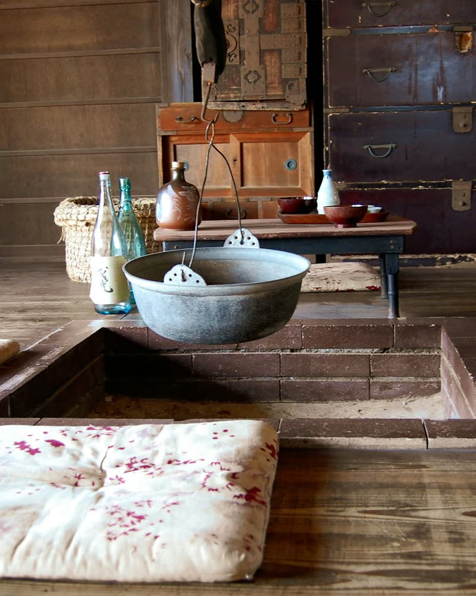
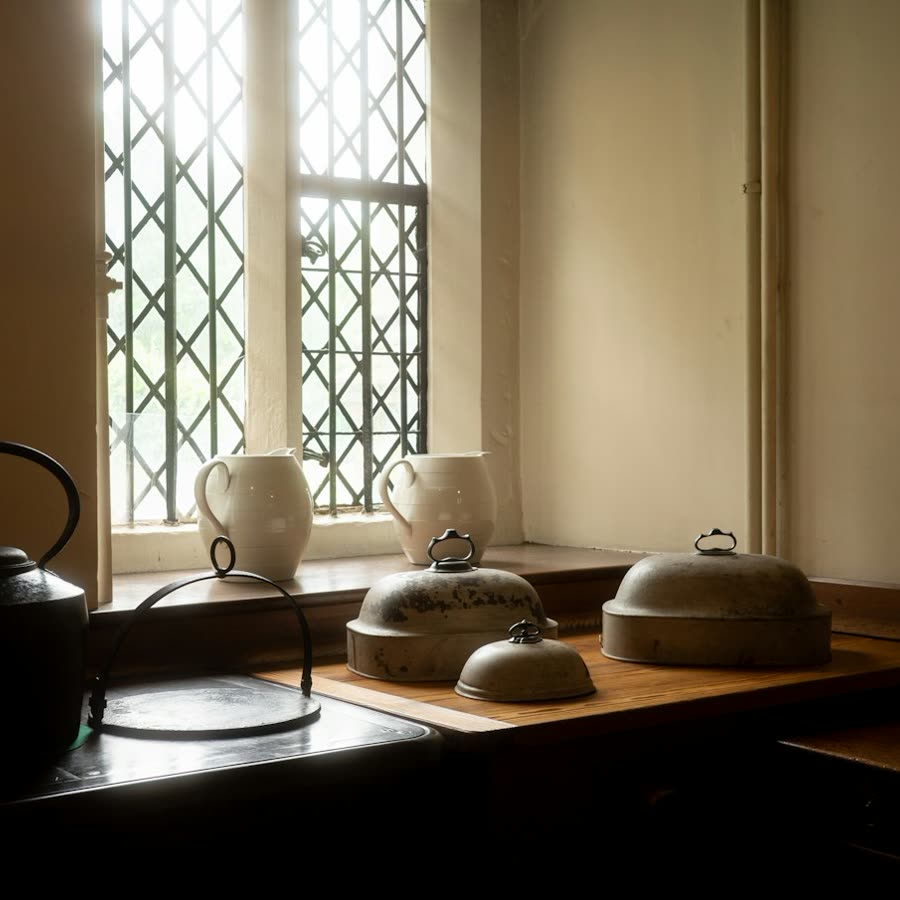
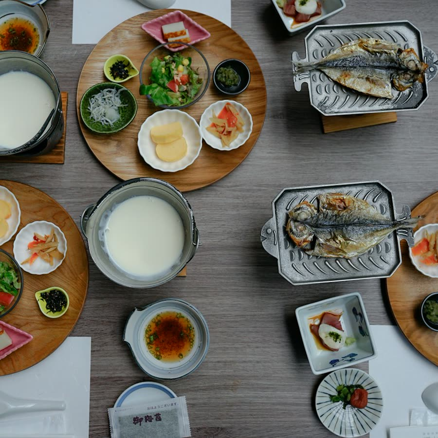

하룻밤 190,000원부터사랑채
둘이서좌식 다실이 딸린 방
마을에서 가장 안쪽, 돌담이 끝나는 자리에 있습니다. 마루에 앉으면 기와 사이로 나무가 흔들리는 것이 보이고, 밤에는 불을 낮춥니다. 텔레비전은 두지 않았습니다.
채마다 대문에서 따로 들어갑니다. 값은 평일 하룻밤 기준이고 예시입니다.


머무는 동안
시간과 차림은 예시입니다
차가 없어도 닿습니다. 역에서 대문까지 한 시간이 걸리지 않습니다.
○○역
기차에서 내립니다
군내 버스
20분을 달립니다
마을 입구
돌담길을 5분 걷습니다
○○재
대문을 열어 둡니다
○○도 ○○군 ○○면 ○○길 00 · 02-000-0000